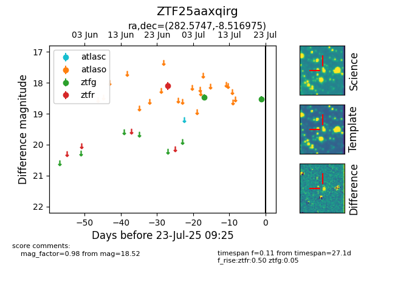

Target ZTF25aaxqirg at 2025-07-23 11:52, see:
FINK: fink-portal.org/ZTF25aaxqirg
Lasair: lasair-ztf.lsst.ac.uk/objects/ZTF25aaxqirg
ALeRCE: alerce.online/object/ZTF25aaxqirg
alt names
ZTF25aaxqirg (ztf,fink)
coordinates:
equatorial (ra, dec) = (282.5747,-8.51698)
galactic (l, b) = (25.2127,-3.62108)
photometry
last ztfg=18.52, ztfr=18.10
2 ztfg, 1 ztfr detections
